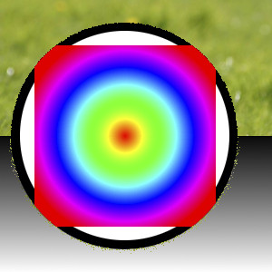
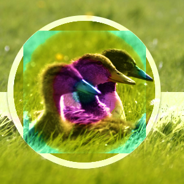
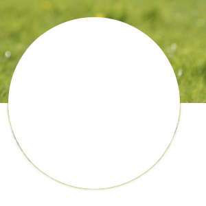

GIMP has a wide variety of layer modes, split up in seven groups: Normal, Lighten, Darken, Contrast, Inversion, HSV components, and LCh components. In addition to these layer modes, there are also the so-called legacy layer modes, which were used before GIMP 2.10.
These legacy layer modes are still available, both for backwards compatibility with saved images from older GIMP versions, and also for specific effects, or for compatibility with other image formats, e.g. Photoshop PSD. In general, they are not used when creating new images.
O GIMP possui 21 modos de camada. Modos de camada também são chamados de “modos de mistura”. Selecionar um modo de camada vai alterar a aparência da camada ou da imagem, com base no que está visível abaixo dessa camada . Se existe apenas uma camada, o modo de camada em geral não tem nenhum efeito (exceto para o modo “Dissolver”). Portanto, deve haver pelo menos duas camadas, para que a imagem seja capaz de utilizar modos de camada.
In addition to the generic layer modes, there is one more layer mode called “Pass through”, which is only available for group layers.
Pass through mode, is less a blending mode in and of itself than an instruction for the group as a whole: it indicates that layers inside the group are to be rendered in combination with other layers below the group, instead of being rendered separately from them.
For more details about Pass through, see Pass through in the Glossary.
Você pode definir o modo de camada no menu de Modo no diálogo de Camadas. O GIMP utiliza o modo de camada para determinar como combinar cada pixel na camada superior com o elemento de imagem no mesmo local na camada inferior.
![[Nota]](images/note.png)
|
Nota |
|---|---|
|
Há uma lista flutuante no diálogo de “opções de ferramentas” que contém os modos que afetam as ferramentas de pintura de forma semelhante aos modos de camada. Você pode usar os mesmos modos de pintura que estão disponíveis para as camadas, e ainda há dois modos adicionais apenas para as ferramentas de pintura. Veja Seção 3.3, “Ferramentas de pincel (lápis, pincel, aerógrafo)”. |
Modos de camada permitem mudanças de cor complexas na imagem. Muitas vezes eles são usados com uma nova camada que atua como um tipo de máscara. Por exemplo, se você colocar uma camada branca sólida sobre uma imagem e definir o modo de camada dessa nova camada para “Saturação”, as camadas subjacentes visíveis aparecerão em tons de cinza.

Os exemplos abaixo mostram os efeitos de cada um dos modos.
Uma vez que os resultados de cada modo variam muito, dependendo das cores das camadas, essas imagens só podem dar uma idéia geral de como funcionam os modos. Você é encorajado a experimentá-los. Você pode começar com duas camadas similares, onde uma é cópia da outra, mas modificando-a ligeiramente (deixe a desfocada, movida, girada, redimensionada, inverta a cor, etc) e veja o que acontece em vários dos modos de camada.
O grupo “Normal” é um tanto improprio. A maioria dos modos, exceto “Normal”, são modos de cancelamento.
- Normal
-
Figura 8.8. Exemplo para o modo de camada “Normal”

A camada superior está com 50% de Opacidade.

Com 100% de opacidade apenas a camada superior é mostrada quando a combinação é feita no modo “Normal”.
O modo Normal é o modo da camada padrão. A camada em cima cobre as camadas abaixo dela. Se você quer ver qualquer coisa abaixo da camada superior quando você usar este modo, a camada deve ter algumas áreas transparentes.
- Dissolver
-
Figura 8.9. Exemplo para o modo de camada “Dissolver”

A camada superior está com 50% de Opacidade. O efeito de “Dissolver” é visível em todos os lugares, exceto em áreas completamente transparentes.

Com 100% de opacidade apenas a camada superior é mostrada quando se está usando o modo “dissolver”.
O modo Dissolver dissolve a camada superior na camada abaixo dela pelo desenho de um padrão aleatório de pixels em áreas de transparência parcial. É útil como um modo de camada, mas geralmente também é útil como um modo de pintura.
- Pincéis coloridos
-
Figura 8.10. Exemplo para o modo de camada “Cor”

Camada superior em 100% de opacidade usando o modo “Apagar Cor”.
O modo Apagar Cor apaga as cores da camada superior da camada inferior. Pixels pretos na camada superior tornam essas partes na camada inferior transparentes, enquanto pixels brancos não têm efeito. Tudo o que está entre eles remove essas cores específicas da camada inferior, deixando os outros componentes de cor intactos.
- Apagar
-
Figura 8.11. Exemplo para o modo de camada “valor”

Camada superior em 100% de opacidade usando o modo “Apagar”. As partes brancas aqui são transparentes.
O modo Cor usa o matiz e a saturação da camada superior e o valor da camada inferior para formar a imagem resultante.
- Mesclar
-
Figura 8.12. Exemplo para o modo de camada “Sub-exposição”

Camada superior em 100% de opacidade usando o modo “Mesclar”.
Merge mode sums opacity values during blending and can yield 100% opacity in cases where Normal does not, like when blending cut-and-pasted content with soft edges whose opacities are mutually exclusive from each other.
This mode is commutative if (but only if) the total opacity between both layers is 100% or less. Otherwise, especially for content that already has 100% opacity, Merge yields the same result as Normal.
- Dividir
-
Figura 8.13. Exemplo para o modo de camada “Luz suave”

Camada superior em 100% de opacidade usando o modo “Dividir”. As partes brancas aqui são transparentes.
Split mode is the inverse of Merge: it subtracts the top layer's opacity from the bottom layer. This can yield full transparency in cases where Erase does not, like if erasing a value of 50% opacity from a layer containing 50% opacity.